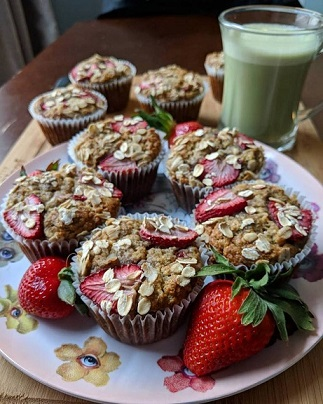
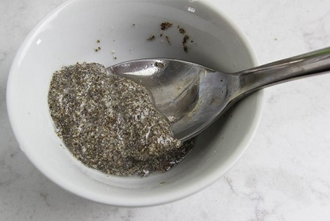
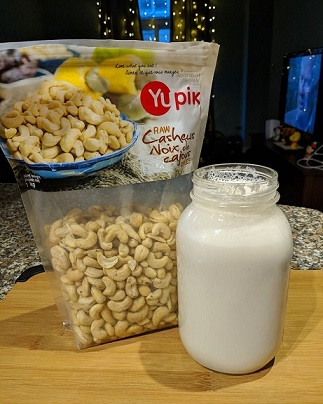
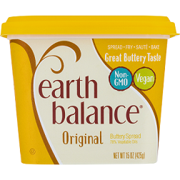

Egg & Dairy Substitutes
Baking rich and tasty desserts without animal products might seem like an impossible feat to some. In fact most baking enthusiasts will be able to tell you at least one story of how they tried to make a vegan dessert once and it turned out tasting like cardboard. While replacing eggs, milk and butter can sometimes be a challenge depending on the recipe, most experienced vegan bakers will tell you that omitting these ingredients is actually a lot easier than you think!
Take it from my italian mother, who is as traditional a cook as it gets! With the help of the following tips she was able to put together this lovely vegan tea party for Mother's Day filled with scrumptious vegan desserts!
Egg-cellent vegan Substitutions for Eggs
The Role of Eggs
Eggs are made up of water as well as protein and fat. Recipes for baked goods usually use eggs for 3 reasons:
- They provide structure: Eggs harden when heated which works to bind ingredients together and to strengthen the finished product.
- They provide moisture and richness: Because of the fat content in egg yolks, they add moisture and richness to the flavor of baked goods.
- They help with the leavening: As the water evaporates off of the eggs it helps to lighten and leaven baked goods.
Now that we understand how eggs work in a recipe, let's talk about how to substitute them!
Flax Eggs
A flax seed egg, or a flegg, is an egg substitute made from flax seed and water. A shown in the video, to make a flax egg, you simply mix one tablespoon of flax meal with three tablespoons of hot water and let it sit for about 5 minutes. When mixed with water, flax meal turns into a gel called hydrocolloid, which can emulate the binding nature of a regular egg in various recipes.
When to use flax eggs:It is best to use flax eggs in heartier recipes, like in brownies, cookies, muffins, banana breads, carrot cake etc.
Flax Eggs worked great in my Banana Strawberry breakfast muffins!
Chia Seed Eggs
A chia egg is simply made from water and whole chia seeds. Chia seeds work in the exact same way as flax meal does to bind ingredients together. To make a chia egg just mix one tablespoon of chia seeds with 3 tablespoons of hot water and let it sit for 5 minutes. Chia seeds are also great vegan source of Omega 3 and protein!
When to use chia eggs: Like flax eggs, you can use chia eggs in heartier recipes, like in brownies, cookies, muffins, banana breads, carrot cake etc.
Egg Replacer Powder
All egg replacer powders are made up of a combination of starches flours and rising agents, so they do a great job of mimicking eggs in dessert recipes. They are especially useful when volume in a recipe is important and can be found in most grocery stores.
When to use egg replacer powders:Egg Replacer powders are very versatile and can be use in all baking recipes that call for eggs. They even work well when making light and fluffy cakes and pancakes!
Silken Tofu
If a recipe is only using eggs to add moisture, then replacing them with pureed silken tofu works well. Just substitute ¼ cup silken tofu for 1 egg. A bonus is that tofu is also packed with protein!
When to use tofu: Tofu works well in dense recipes like in brownies, cheesecakes, ice cream, or puddings.
Baking soda and Vinegar
The chemical reaction between baking soda and vinegar helps baked goods rise and makes cakes, cupcakes, or muffins light,fluffy and airy. Mix 1 tsp of baking soda with 1 tsp of white vinegar to replace 1 egg.
When to use baking soda and vinegar: This combination works best when you want your desserts to be light and fluffy, like in cakes and cupcakes.
Mashed Banana or Applesauce
Like tofu, mashed banana and applesauce work to add moisture to a recipe. They both work well as long as there is another leaving agent present in the recipe. Use ¼ cup applesauce or mashed banana for 1 egg. This is a very healthy alternative to eggs and works in recipes where you won't mind the extra apple or banana flavour!
When to use banana and applesauce: Banana and applesauce are especially good in cookies, cakes and muffins.
Aquafaba
Aquafaba means bean water and in the context of vegan baking, it refers to the liquid in a can of chickpeas. Aquafaba is an amazing substitute for egg whites since the proteins and starches are structurally very similar. Substitute 1 tablespoon of aquafaba for one egg yolk, two tablespoons of aquafaba for one egg white, or three tablespoons of aquafaba for a whole egg.
When to use Aquafaba: Aquafaba works great to make meringues, marshmallows and ice cream!
Vegan Substitutions for Milk
|  |
Today's supermarkets are brimming with non-dairy, plant-based milk alternatives and when it comes to baking, any plant based milk will do! To substitute milk in a recipe, simply swap cow's milk for one of the many non-dairy milks available such as soy milk, almond milk, cashew milk, hemp milk, oat milk or pea milk. |
Of course, making your own plant-based milk is always an option too!
Vegan Substitutions for Butter
|  |
Butter has specific functions in baking. Some recipes, like shortbread cookies, need butter for flavor, but in many recipes, butter is used to add moisture and texture, and to help create flaky layers. Butter is also a leavening agent, making the final product light and fluffy. |
Vegan butter spread, butter sticks & shortening
There are various brands of vegan butter products available in most grocery stores such as Earth Balance, Becel and Nutiva. Like with plant-based milk, you can simply swap out the animal-based butter with an equal amount of vegan butter.
Coconut oil
If you want to replace butter with a healthier alternative, then coconut oil is a good substitution. Coconut oil is an ideal baking substitute because of its resistance to high temperature. It can be substituted in a 1:1 ratio for unsalted butter in any baking recipe.